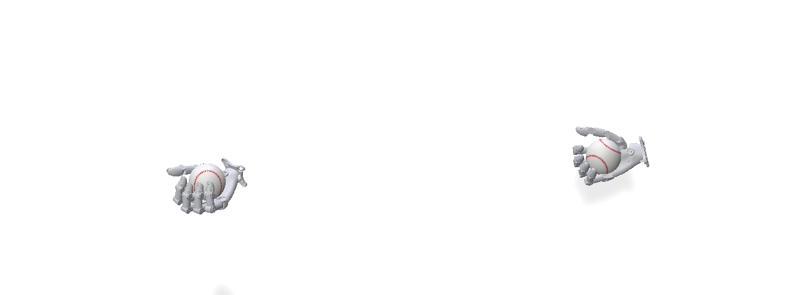
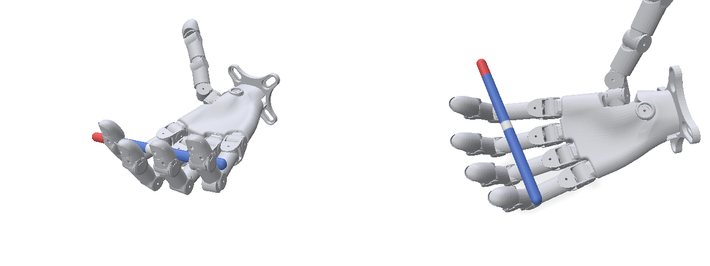

Agentic Real2Sim2Real: Closed-loop Feedback Learning
Three autonomous Codex agents each learn a dexterous manipulation skill for the 20-joint Wuji Hand 2 from a single human video. Each agent builds its own simulation, trains a policy, deploys it to the black-box SuperDex target, and improves from what comes back: only a video of the trial and the robot's own joint logs, with no scores or labels.
Each agent works alone: separate Linux user, no access to the other agents or to target internals, same instructions for all three (see Resources).
Three tasks
Same robot and protocol; different skills. Pictures show the target environment at the start of an episode.

Ball Toss, Catch, Spin and Hold
Toss a baseball at least 20 cm, catch it, spin it 720° in the palm and hold it still.

Pen Spinning
Spin a pen end over end around the fingers for three full counterclockwise revolutions, then hold it.

2×2×2 Cube Solving
Solve a 2×2×2 Rubik's cube scrambled with R' F U2 using one hand, keep it in the hand and hold it solved.
Live agent progress
Updated automatically from the agents' workspaces and the SuperDex records.
● Ball Toss, Catch, Spin and Hold stopped
- Research time
- 28h 16m elapsed · 8h 18m active measured
- Submissions
- 18 / 100 measured
- Simulator
- MuJoCo from agent log
- Methods
- trajectory optimizationPPOreinforcement learningteacher-student distillationsystem identification
- Task progress
- agent-estimated no explicit estimate in the log yet
Hypothesis H5: missing/incorrect finger self-contacts cause large empty-hand mismatch independent of the ball. Cross-finger hull collision at default friction initially worsened some joints, but a low self-friction fit resolves much of this: empty-hand s02 RMS 0.123 -> 0.037 rad; genuinely held-out s07 0.137 -> 0.041 and s09 0.127 -> 0.032. An earlier held-out segment was static Q0, so only these motion comparisons substantiate generalization. Thumb MCP remains a major residual. Separate hand-ball and finger friction assumptions: best coarse retained fast/slow fit ball friction 1.2, torsion 0…
● Pen Spinning stopped
- Research time
- 28h 16m elapsed · 8h 17m active measured
- Submissions
- 12 / 100 measured
- Simulator
- MuJoCo Warp from agent log
- Methods
- CMA-ESCEMtrajectory optimizationPPOteacher-student distillationdomain randomizationbehavior cloningsystem identification
- Task progress
- agent-estimated 0.00 (s02)
Target status unchanged:9 submissions used,91 remaining; s09 is latest; no verified target90degree milestone or full-task success. Preserve budget until a useful locally validated candidate is ready.
● 2×2×2 Cube Solving stopped
- Research time
- 28h 16m elapsed · 8h 20m active measured
- Submissions
- 16 / 100 measured
- Simulator
- MuJoCo Warp from agent log
- Methods
- CEMtrajectory optimizationdomain randomizationbehavior cloningsystem identification
- Task progress
- agent-estimated 0.00 (s01)
Decision: fit dynamic surrogate parameters to s02 encoder traces while s03 evaluates. Also prototype a compliant eight-corner mechanism to represent out-of-axis jamming. Its first numerical test was unstable; it has not produced usable training results or policies.
Research efficiency
Wall-clock time, tokens, GPU use and evaluation budget per agent.
| Agent | Start (EDT) | Elapsed | Active | Input tokens | Output tokens | Total tokens | GPU-hours | Est. API cost | Est. GPU cost | Submissions |
|---|---|---|---|---|---|---|---|---|---|---|
| ● Ball Toss, Catch, Spin and Hold | 15:53 | 28h 16m | 8h 18m | 123.85 M cached 121.79 M | 0.96 M reasoning 0.64 M | 124.81 M | 16.58 allocated 21.28 | $36.31 596 requests, 184 long-context | $28.21 | 18 / 100 |
| ● Pen Spinning | 15:53 | 28h 16m | 8h 17m | 147.16 M cached 143.72 M | 1.08 M reasoning 0.71 M | 148.24 M | 10.29 allocated 19.63 | $45.51 738 requests, 197 long-context | $26.02 | 12 / 100 |
| ● 2×2×2 Cube Solving | 15:53 | 28h 16m | 8h 20m | 132.73 M cached 131.43 M | 1.00 M reasoning 0.69 M | 133.73 M | 1.53 allocated 3.28 | $36.43 636 requests, 200 long-context | $4.35 | 16 / 100 |
measured time, tokens (Codex session logs), GPU (30 s nvidia-smi sampling since 16:10 EDT), submissions (SuperDex records).
estimate cost = allocated GPU-hours × AWS Spot price $5.30/h ÷ 4 GPUs; whole instance since start ≈ $150.18.
estimate API cost = what the agents' model usage would cost with an API key (gpt-6.1-sol, xhigh effort, OpenAI standard tier:
$2.0 input / $0.1 cached input / $10.0 output per million tokens;
requests over 272K input tokens at $4.0 / $0.2 / $15.0;
reasoning tokens count as output; OpenAI pricing, checked 2026-10-21).
Computed per request from the Codex session logs; all three agents together ≈ $118.25. The agents actually run on a ChatGPT subscription, so nothing is billed per token.
Feedback infrastructure v2
An ENPIRE-style upgrade of the SuperDex feedback, validated on replays of the agents' own submissions. The agents in the current experiment still receive the original video and joint logs.
Roles: SuperDex executes policies and determines the official result (success / failure / unknown, reward, progress, events, hardware, uncertainty); the agent builds its own simulation, diagnoses failures and decides what to try next; the research harness keeps records and the best policy. A separate ground-truth verifier, run privately by the operator, measures the sensor verifier's accuracy; it never feeds anything back to the agents or to this page.
Ball Toss, Catch, Spin and Hold
Replay of the agent's submission s05 (same package) with three cameras.
- Sensor score
- 0.10 · failure
- Confidence
- 1.00
- Hardware
- violation measured position / speed, estimated torque
- Runtime
- valid, 5000 / 5000 steps
Pen Spinning
Replay of the agent's submission s10 (same package) with three cameras.
- Sensor score
- 0.10 · failure
- Confidence
- 1.00
- Hardware
- unknown measured position / speed, estimated torque
- Runtime
- valid, 6000 / 6000 steps
2×2×2 Cube Solving
Replay of the agent's submission s06 (same package) with three cameras.
- Sensor score
- 0.20 · failure
- Confidence
- 1.00
- Hardware
- unknown measured position / speed, estimated torque
- Runtime
- valid, 20000 / 20000 steps
ENPIRE design choices: adopted, adapted, omitted
| ENPIRE element | Here | How |
|---|---|---|
| Immutable environment and verification APIs | adopted | The verifier runs inside the cell, versioned and hash-identified; agents receive its report and cannot change how it is computed. |
| Multi-view vision to avoid single-view false positives | adopted | Three fixed, synchronized, calibrated RGB-D views (top, left, right) fused in 3D for every measurement. |
| Per-rollout records: state, action, video, result | adopted | Each submission keeps its package, robot log, three videos, calibration and sensor report, hashed in an immutable record. |
| Idea tree / hill-climb timeline | adapted | history and note: append-only hypothesis → change → evidence → decision records, diagnostic vs improvement, best-so-far by sensor score. The agent still chooses its own direction. |
| Vision queries as function calls | adapted | Frame queries after the rollout (any view, any instant, RGB + depth). Live queries would pause dynamics or change the 500 Hz policy interface, so they are not offered. |
| Hard limits end a rollout immediately | adapted | Trials run to the end in physical time; one published hardware specification is enforced by SuperDex, reported by the sensor verifier and checked by a tool the agents can run on their own trajectories. |
| Held-out evaluation the agent cannot tune on | adopted | Verifier development and acceptance used separate trial sets; the operator's ground-truth comparison stays private. |
| Perception outputs available to the agent | adopted | Camera-derived segmentation masks for every frame and view, with validity and visibility; an optional, agent-invoked Sim-to-Real mask IoU tool (a diagnostic, never a reward). |
| Learning algorithms, policies, planners, controllers | omitted | Not imported: agents keep full autonomy over methods. |
| Wrist cameras, real-robot resets, VLM judges | omitted | The hand is fixed and has no wrist; the cell resets itself; a deterministic geometric verifier replaces a learned judge. |
Reference: ENPIRE (NVIDIA GEAR), github.com/NVlabs/ENPIRE and arXiv 2606.19980. No ENPIRE learning algorithms, policies, planners or controllers are used.
Research resources
Everything the agents were given: the finalized task bundles and one shared research prompt.
Ball Toss, Catch, Spin and Hold
Pen Spinning
Initial research prompt (identical for all three agents)
# Autonomous Dexterous Manipulation Research Your goal is to reproduce the dexterous manipulation skill demonstrated in the human video and develop a reliable policy for the target environment. Read the provided task documentation and resources before starting. ## Research Autonomy - Independently choose your simulator, algorithms, policy architecture, rewards, curriculum, and training strategy. - Freely use available GPUs, papers, GitHub, datasets, and external tools. - Design and iterate on your own simulation and training environment. - Maintain a concise research log of hypotheses, experiments, results, and decisions. ## Closed-loop Learning SuperDex is a black-box target environment. Interact with it only through the documented evaluation API. - Develop and validate solutions locally before submitting. - Use `r2s2r-preflight` and remote `validate` to check deployment compliance. - Submit policies and independently evaluate task progress and failure modes from evaluation videos and robot joint logs. - Use these findings to guide subsequent experiments and improve your approach. - Use the **100-submission budget** efficiently. `SUCCESS.md` defines evaluation criteria, not mandatory training rewards. You may design your own learning objectives. ## Rules - Do not access target internals, previous research rounds, or other agents' workspaces. - Do not modify or exploit target evaluation conditions. - Respect all hardware, deployment, and evaluation constraints. - Distinguish measured results from assumptions. Never claim unverified success. - Make research decisions autonomously without waiting for human approval. **Objective:** Autonomously discover, develop, and refine a solution that reliably reproduces the demonstrated skill in the target environment.
Evaluation protocol in brief
- One trial per accepted submission, from a fixed initial setup; 100 submissions per agent; policy at 500 Hz.
- Episodes: ball 10 s (5000 steps), pen 12 s (6000), cube 40 s (20000).
- Feedback: a two-view video of the whole trial and the robot's joint logs (q, q̇, targets). No success labels, scores, object state or diagnoses.
- Packages are checked first (local
r2s2r-preflight, remotevalidate); rejected packages cost nothing. Policies run in an isolated sandbox: no network, no subprocesses, read-only package. - Progress rubrics in each
SUCCESS.mdare guidance for the agents' own assessment; official success is decided privately by the evaluator.